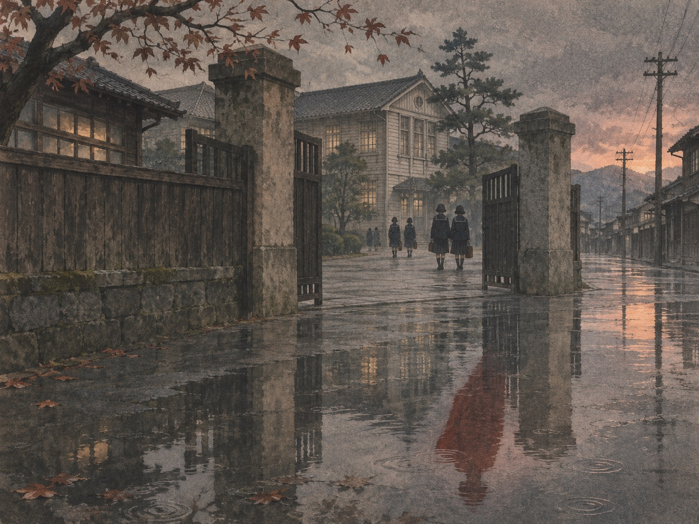

Japan with
Japan with
You are alone in a school restroom. There is no paper in the stall. Then a voice asks a question with the rhythm of a children’s game: “Do you want red, or do you want blue?” In the most familiar modern retellings, red leads to an ending explained through blood; blue leads to strangulation, draining or a blue face. A third answer may rescue you in one school and doom you in another.
The figure behind that question is often called Aka Manto—Red Cloak—or the story is named simply Akai Kami, Aoi Kami, Red Paper, Blue Paper. English summaries frequently merge these names into one masked restroom spirit with a stable biography. The Japanese record is messier and more interesting. Cloak, paper, vest, disembodied voice and “safe” color are pieces that storytellers keep exchanging.
No supernatural event has been verified. There is also no responsible reason to identify a real school, victim or criminal as the origin. What can be documented is the legend’s circulation: changing examples collected in folklore publications, school-story research and official cultural archives.
The rule listeners think they know
The popular script is compact enough to perform aloud. A narrator creates the stall, removes the toilet paper, then turns toward the audience: red or blue? Each answer appears to control the ending. That apparent control is the hook.
In an official Web Japan feature from 1999, one school’s version places a pale-faced man beside a restroom door. He asks whether the entrant wants a red or blue cloak. The red answer brings a red cloak down from the ceiling; blue leads to a hand reaching from the toilet. That is already different from the neat internet summary. The story is not a rulebook inherited intact. It is a local performance assembled from memorable parts.
Why this is participatory horror
Many ghost stories ask listeners to watch a character make a mistake. Aka Manto asks the listener to make it. The narrator can pause, take a vote, point to one person or let a live audience flood a chat with red and blue. The story therefore carries its own interaction design: a binary prompt, an immediate prediction, a consequence and a replay invitation.
The choice is rigged, but it does not feel pointless. The audience immediately starts searching for the move the narrator has hidden: say another color, refuse all paper, stay silent, run, or answer with an object that cannot be turned into a color punishment. Every proposed escape becomes material for the next retelling.
Nichibunken’s Kaii–Yōkai Denshō Database makes this instability unusually clear. A 1986 Tokyo record says red leaves the victim covered in blood, blue produces strangulation and a blue face, and white causes no harm. A 1999 Tochigi example says “I don’t want anything” is the best answer. A 2001 Hyōgo record makes yellow safe but white dangerous. A 2001 Shimane version sends the red chooser into the toilet and makes the blue chooser grow old. The variation is not noise around the “real” story. It is the engine that keeps the choice alive.
Red Cloak and colored paper are related—but not identical twins
Researcher Hideho Narasaki’s 2022 morphological study of school ghost stories notes a red-cloak rumor circulating around 1938, then a wartime-era example in which a restroom voice asks about blue or red paper. Later decades add phrases such as “red vest” or akai chanchanko. The sequence is suggestive, but it does not prove that every paper story descended from one cloaked criminal rumor in a straight line.
The early “Red Cloak” could refer to a threatening stranger associated with children and school routes. The restroom choice-tale works differently: it is a verbal trap located in an enclosed school space. Names and images can cross between rumor families, and later books or television can make one combination appear canonical. The careful conclusion is that the strands influenced and absorbed one another—not that one authenticated 1930s incident created a supernatural being.

Why a school restroom?
A restroom is private but never fully secure. It belongs to the school, yet the closed stall temporarily removes the student from classroom supervision. Doors hide sightlines; plumbing creates unexplained sounds; mirrors duplicate space; and the user may be physically vulnerable. In older school buildings, dim corridors and squat toilets could intensify that discomfort.
Narasaki describes the restroom as one of the school’s “empty” or weakly ordered spaces: a place associated not only with bodily functions but also with smoking, bullying, damage and other behavior outside the formal classroom. A ghost story gives that anxiety a repeatable shape. The final stall becomes a stage, the missing paper becomes a prop, and the voice becomes a performer nobody can see.
That does not mean every Japanese pupil believed the story, or that modern school toilets are uniquely frightening. Stories vary by generation, school and media exposure. Some are told for a real scare; some are jokes, dares or tests of whether a newcomer knows the local answer. The social function matters as much as belief: knowing the variant can mark membership in a group.
A legend built for remixing
| Element | Stable enough to recognize | What storytellers remix |
|---|---|---|
| Place | School or public restroom, often a remote stall | Which floor, stall number, gendered space or time of day |
| Questioner | An unseen or alarming presence | Masked man, pale man, cloak, hand, ghost or voice only |
| Choice | Two or more colors | Cloak, paper, vest, favorite color, plus white or yellow |
| Consequence | The color becomes bodily danger | Blood, choking, draining, aging, disappearance or absurd punchline |
| Escape | A listener searches outside the binary | Refusal, silence, another color, fleeing—or no escape at all |
This modular design explains why the story travels well outside Japan. It requires almost no cultural exposition: a private stall, two colors and a bad choice. Yet the Japanese school setting gives it a particular social architecture. The version belongs to whoever knows the right door and the latest answer.
How to tell it responsibly
Treat outcomes as story variants, not instructions for a real-world challenge. Do not enter restricted school grounds, film people in restrooms, frighten strangers, identify a child as a “victim,” or stage encounters in public facilities. The useful participatory version belongs in fiction: let an audience vote, then reveal that different documented tellings contradict one another.
That contradiction can become the final scare. If the viewers choose white because one Tokyo record calls it safe, the narrator can show that a later Hyōgo version makes white dangerous. The point is not to “beat” the ghost. It is to feel folklore changing under your answer.
Aka (赤) means red and ao (青) means blue. Explore these and other story words at Japanese Training Lab—free web practice with no signup. To see ordinary Japan beyond the ghost-story setting, walk real streets with Yuji on TikTok LIVE. DraMap, created by Yuji and introduced here by its publisher, lets iPhone users learn Japanese while playing.
Reporting sources
- International Research Center for Japanese Studies: red/blue paper records and related variants (official research database; entries from 1972–2001).
- Nichibunken: scope and methodology of the Kaii–Yōkai Denshō Database (official database documentation).
- Web Japan: “School Ghost Stories” (1999 government cultural-information archive with a red/blue cloak variant).
- Hideho Narasaki, “Morphology of School Ghost Stories” (2022 peer-reviewed university bulletin repository).
- International Library of Children’s Literature: 2011 lecture record on children’s literature and language (National Diet Library; discusses colored-paper stories among children).
- National Institute of Technology, Maizuru College Library newsletter (2020 overview of toilet folklore and changing school legends).
Sources and links rechecked November 16, 2026 (JST). Folklore records document what was reported, not proof of supernatural events.
Yuji Shimizu is the editor and guide behind Japan Unfolded and the creator of DraMap. The choice of topic and interpretation are editorial judgments. DraMap links are the publisher’s own promotion, not an independent recommendation.